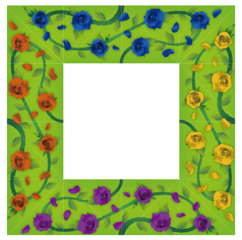
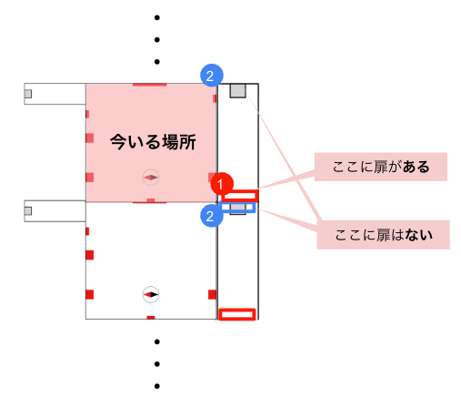

チームメンバー全員の合意を得てから読み進めましょう。
ヒントが表示されない場合は右上リロードボタンを押してください
部屋のオブジェと謎が１個ずつ対応しています。
謎の特徴から当てはまるオブジェを考えてみましょう。
オブジェ『希望』に対応しています。
オブジェは方位磁石をモチーフにしたものであり、赤い針は北を表します。
北を下に向けたとき、謎の用紙に対して左側は東、上側は南、右側は西を表します。
アタマやシッポは日本語で、ヘッドやテールはカタカナ英語であることに気をつけてそれぞれの方角の名前の先頭の文字と末尾の文字を読みましょう。
例えば、謎の用紙の上側（土にいる生き物）は、
「みなみ」のアタマ→み
「みなみ」のシッポ→み
「サウス」のテール＋濁点→ず
よって「土にいる生き物」＝「みみず」となります。
謎の用紙の左側（東側）の「台所にある道具」は、
「イースト」のテール（最後の文字）→と
「イースト」のヘッド（最初の文字）→い
「ひがし」のシッポ（最後の文字）→し
よって「台所にある道具」＝「といし」となります。
これを答えるべき右側に適用すると、
謎の用紙の右側（西側）は、
「ウエスト」のテール（最後の文字）の濁点付き→？
「ウエスト」のヘッド（最初の文字）→？
「にし」のシッポ（最後の文字）→？
を繋げたものを考えましょう。
答えはドウシです。
オブジェ『深層』に対応しています。
オブジェの1番上にあるものは「太陽」です。
真ん中にあるものは「雲」です。
1番下にあるものは「土」です。
「真ん中に複数あるもの」は逆さに書かれているので逆さから読み、「もく」を表します。
これらを表し、7つの繰り返すものを考えてみましょう。
日→・・・→もく→・・・→土となっていることから、7つの繰り返すものは曜日です。
左からひらがなで日月火水木金土を埋め、文字を拾いましょう
答えはカキンです。
オブジェ『青空』に対応しています。
四角の空欄の中には素材名が入ります。
3つの青三角の付いている3つの四角に入る文字がどういう法則であれば「マクロ」になるのか考えましょう。
特に三角の示す方向に着目しましょう。
法則がわかったら、同様の法則を赤三角にも当てはめましょう。
3つの青三角では、ハ→マ、エ→ク、レ→ロになっています。
これは五十音表で矢印の方向に動かすことで成り立っています。
赤三角も同様に、「ネ」「チ」「リ」を五十音表の矢印の方向に変換しましょう
答えはテツヤです。
オブジェ『沈黙』に対応しています。
オブジェはひらがなの「へ」をモチーフにしています。
これを丸に入れたとき、配置から連想されるものを考えましょう。
⚫️は「も」が入り、三角には「の」が入ります。
黒四角にはそれぞれアルファベット小文字が入ります。
図形は「へのへのもへじ」を表しています。
上の「へ」は眉毛、下の「へ」は口が対応しています。
マスに当てはまるようにアルファベットに変換しましょう。
答えはギンミです。
1問目で使ったオブジェのタイトルの1文字目、2問目で使ったオブジェの2文字目というように文字を拾うと「キンゾク」となります。
よって謎1〜4の答えから「金属」を消して残った文字を並び替えましょう。
答えは「か」から始まるものになります。
小謎1~4の答えから金属となる金（キン）、銀（ギン）、銅（ドウ）、鉄（テツ）を消した上で、残った文字「シ」「カ」「ヤ」「ミ」を並び替えましょう。
答えはカシミヤとなります。
部屋の絵画と小謎が１個ずつ対応しています。
小謎の特徴から当てはまる絵画を考えてみましょう。
『チョコレート』に対応しています。
チョコレートは会場前方にあります
メジャーで実際に40cmの正方形のタイルを探し、同じ位置にある文字を読みましょう
答えはビテキです。
『モノクロ』に対応しています。
絵画の色味に着目して○に入る言葉を考えてみましょう。
2には「い」が入ります。
左ほど薄く、右ほど濃いです。
うすい⇔こい を埋めて文字を拾いましょう。
答えはスイコウです。
『きになるき』に対応しています。
絵の中に太鼓、キャンディ、ギター、カップケーキがあります。
それと対応する文字を読みましょう。
答えはコエダシです。
『Sauvage』に対応しています。
枠には「ソバージュ」と「クラーケン」が入ります。
7の矢印の部分を読むと「ジー」、11の矢印の部分を読むと「ケー」を表しており、数字はアルファベットで何番目かを表しています。
アルファベットの5番目はE、14番目はN、4番目はDです。
答えはエンドです。
謎Ⅰ〜Ⅳの答えを埋めて番号を拾うと「ウエストの下拾え」という指示になります。
ウエストを日本語で言うとコシとニシです。コシとニシの下の文字を下の枠内から拾いましょう。
答えはテイエンです。
パズルのピースを花の色ごとに分ましょう（紫・赤・黄・青）。
切れたツタの位置や葉っぱ、花びらをたよりにピースを繋げていきましょう。
パズルは下記のようになります。
隣の部屋の絵画を見ることはできません。
どんな絵画があるのかを問題文から想像して解きましょう。
例えば、謎αでは問題文から「犬からいずれかの動物まで繋ぐ」とわかるので、犬から他の動物までのルートをすべて試してみましょう。
問題文から「犬からいずれかの動物まで繋ぐ」謎であるとわかります。
犬から他の動物までのルートをすべて試してみましょう。
犬からウサギのルートを辿ると「たからくじ」となります。
しかし答えは３文字です。
さらに「田から９時」までの文字を拾うと、「はからい」となります。
さらに「歯から亥」までの文字を拾いましょう。
答えはどぐうです。
赤矢印の変換をするとコマに、青矢印の変換をするとマゴになっています。
バードがハートになっているため、赤矢印は濁点を取る法則だとわかります。
よってコマに濁点をつけて、四角枠にはゴマが当てはまることがわかります。
ミルクがクルミになっているため、青矢印は逆から読む法則だとわかります。
よってマゴを逆から読んで、ゴマが当てはまることがわかります。
その後、紫矢印の変換があり、これは赤矢印と青矢印が重なっていると考え、どちらの法則も適用する必要があると考えましょう。
「しらが」の順番を後ろからに変えて、濁点を取りましょう。
答えはからしです。
まずは「づ」が入る工具を考えてみましょう。
それと似た4文字の工具の名称を入れましょう。
線で繋がれている部分には同じ文字が入ります。
「づ」が入る工具は「かなづち」です。
「かなづち」の言い換えとして、「ハンマー」「とんかち」があります。
線で同じ文字が繋がるように枠に埋めて、対象の文字を拾いましょう。
答えはまんがです。
ウミガメは英語で「タートル」です。
「かたーうみら」が「カメラ」に変化しています。
「ウミ」が「メ」に変わり、「ター」を「トル（＝取る）」という法則になっています。
同様に「ねいびーかぶとる」が何らかの法則により変化しています。
当てはまる虫の名前を考えてみましょう。
「ねいびーかぶとる」の文字から、「かぶとむし」が当てはまると推測できます。
「ねいびーかぶとる」から「かぶと」を無視し、「びー」を取り除きましょう。
残った文字が答えです
答えはねいるです。
どぐう、からし、まんが、ねいるを埋め、紫矢印の変換の法則を当てはめましょう。
紫矢印は謎βで出てきました。
「うらがね」に対して濁点をとって逆から読みましょう。
すると「ねからう」と出てきます。これは謎αで似たような謎がありました。
謎αで干支の「ね（ねずみ）」から「う（うさぎ）」を辿り、通った文字を読みましょう。
答えはアートです。
隣の部屋のオブジェを見ることはできません。
どんなオブジェがあるのかを問題文から想像して解きましょう。
同じオブジェがある他の小謎と組み合わせて考えます。
まずはAとBが載っている小謎から考えてみましょう。
マスが81個あり、かけ算の九九を表しています。
2×4が「にし」で西、8×8が「はっぱ」で葉っぱを表しています。
Aの下部には「葉っぱ」、Bの上部には「西」が当てはります。
答えのマスは１×９にあたります。
九九で１×９をどう発音しているか考えましょう。
答えはインクです。
黒い針がオブジェBではSを、オブジェCでは5を指していると考えましょう。
Sを指すものは方位磁石、5を指すものは時計です。
そのときに赤い針が指しているものは、オブジェBではN、オブジェCでは12です。
これらを枠に当てはまるように表を埋めましょう。
方位磁石で黒い針は南なのでSOUTH、赤い針は北なのでNORTHが埋まります。
時計で黒い針は５なのでFIVE、赤い針は１２なのでTWELVEが埋まります。
答えはライオンです。
2つのイラストを繋いで間の文字を読んで「ほたる」となるので、傘と笠地蔵の「笠」が繋がれているとわかります。
つまり、同音異義語のイラストの間を読む謎であると推測できます。
（オブジェDは傘を表し、その同音異義語の傘と笠を繋いでいる）
Cは「ニジ」を当てはめると他の問題で上手くいきません。
Cを「ゴジ」と考えてみましょう。
赤い針と黒い針の問題からオブジェCは「５時」だとわかります。
誤字を探すと「読」の漢字が誤字しています。
５時と誤字を繋いで間の文字を読みましょう。
答えはキタクです。
Dは上記のCとDの謎によると、傘を表していたことが分かります。
枠にかさを埋めると、五十音のあ段を表しているとわかります。
オブジェAの上部には「はな」があることがわかります。
他の問題の情報と組み合わせると、オブジェAは「花」と「葉」があるとわかります。
答えはタカラです。
インク、ライオン、キタク、タカラのうち、同じ文字を消して並び替えましょう。
答えは「お」から始まります。
答えはおかきです。
『モノクロ』や『チョコレート』の壁の裏の部屋を実際に見て美術品を確認することはできません。推測して答えましょう。
STEP4、STEP5の謎から、どんな美術品があるのかを考えましょう。
STEP4から絵画には、北にうさぎ、西にゴマ、東にハンマー、南にカブトムシが隠れていることがわかります。また、STEP5からオブジェには、赤い針と黒い針の方位磁石、赤い針と黒い針の５時の時計、花と葉、傘があることがわかります。
正解は必ず選択肢のどちらかです。
選択肢の美術品は、この部屋にある美術品と名前が一致しています。
このことから、隣の部屋にも同じ名前の美術品があると推測できます。
問1例）STEP4から東にハンマーが隠れた絵画あることがわかります。この部屋で東にある絵画『チョコレート』をよく見ると、真ん中に大きいハンマーが描かれていることがわかります。
このことから、東にあるハンマーの隠れた絵画『チョコレート』が向こうの部屋でも同じ方角にあると推測できます。
この方法で他の問についても考えていきましょう。
答えは上からチョコレート、きになるき、沈黙、青空です。
『モノクロ』です
『青空』です
『希望』です
絵本の文章から隣の部屋を含む全ての部屋の同じ方角に同じタイトルの美術品があることがわかります。
隣の部屋を想像して素材を探しましょう。
矢を使うためには、弓を手に入れる必要があります。
弓は倉庫にある宝箱の中にありました。
しかし取り出し口となる穴が小さく、手が入らないため、倉庫の宝箱から弓を手に入れることは不可能です。
弓の別の入手方法はないでしょうか。
ソバージュの絵画の横から入れる部屋にも宝箱がありました。
その宝箱は倉庫にあった宝箱と形が似ていてサイズが大きいです。
中身が同じであるかはわかりませんが、こちらの宝箱なら取り出し口の穴も大きくて、手を入れて中身を取り出すことができます。
大きな宝箱の開け方を考えていきましょう。
会場左側の倉庫の宝箱は金庫から出てきた鍵（パズル）を使って開錠しました。
その鍵が入っていた金庫は、STEP2でこの部屋の絵画を見ながら解いてパスワードを求めることで、開錠できました。
ソバージュの絵画の横から入れる部屋でも、同じ手順で金庫を開けましょう。
この空間の構造をもう一度考えてみましょう。
今いる場所と同じ部屋が「モノクロ」の壁の向こう側にも存在すると考える場合

ソバージュ絵画の横から入れる部屋も同じように向こう側に存在することになります。
ソバージュ絵画の横から入れる部屋の奥には扉があります。
（上記①の扉）
そうすると扉の反対側はソバージュ絵画の横から入れる部屋の金庫がある壁の部分に繋がっていることになります。（上記の②の場所）
しかしそこに扉はないので、ここと同じ空間が続いている連鎖構造は間違っていることになります。
この空間の正しい構造を考えましょう。
（続きのヒントはSTEP8②を見ましょう。）
会場左側の倉庫にはこの部屋から鍵を開けて入る必要があり、中には金庫や鍵をはめ込めそうな枠、宝箱がありました。
そして、ソバージュの絵画の部屋にはそれらが大きくなったものがあり、奥には鍵のかかった大きな扉がありました。
このことからソバージュの絵画の部屋の正体を考えましょう。
この先に核心的なヒントが載っています。チーム全員合意の上で読み進めましょう。
ソバージュの絵画の部屋には大きいサイズの金庫と宝箱があることから、ソバージュの絵画の部屋の正体は大きな倉庫と考えることができます。
その場合、大きな扉（鍵がかかっていて先に進めない扉）の先にはどんな空間があるか考えましょう。
倉庫の鍵付きの扉を挟んでこの部屋が繋がっていることから、ソバージュの絵画の部屋にある鍵付きの大きな扉の先には大きなこの部屋があると推測できます。
STEP2で解いた謎の中で、この部屋と大きなこの部屋で絵画の大きさが違うことから、答えが変わる謎はないでしょうか。
（続きのヒントはSTEP8③を見ましょう。）
絵画の大きさで答えが変わる問題は謎Ⅰです。
大きな部屋では絵画「チョコレート」のサイズも大きくなっています。
具体的には絵本のマップより2倍だとわかります。
最初に謎Ⅰを解いたときは、今いる部屋の一辺が40cmのタイルを読んでいました。
大きな部屋で40cmのタイルにあたる場所を考えましょう。
大きな部屋には２倍のサイズの絵画「チョコレート」があります。
つまり、この部屋の絵画「チョコレート」の20cmタイル部分が扉の奥の部屋の40cmタイルに相当します。
この部屋の絵画「チョコレート」の20cmタイル部分を読みましょう。
そして、変化した答えを解答欄に埋め直し、「コシ」と「ニシ」の下にある文字を拾いなおしてパスワードを求めましょう。
この先にヒントはありません。